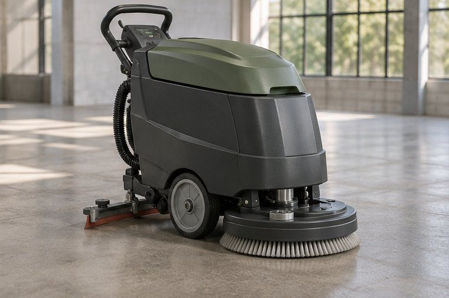
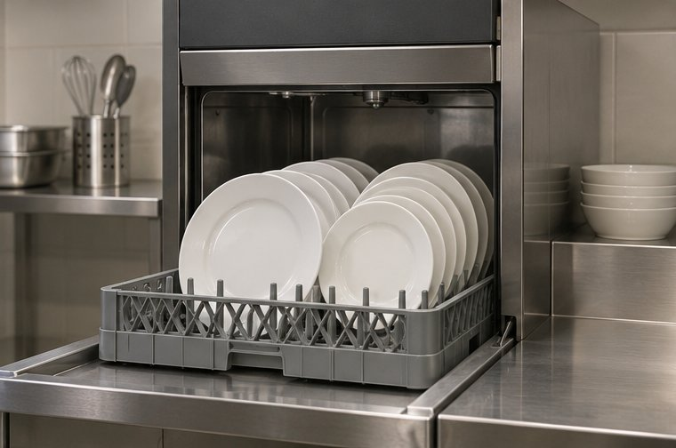
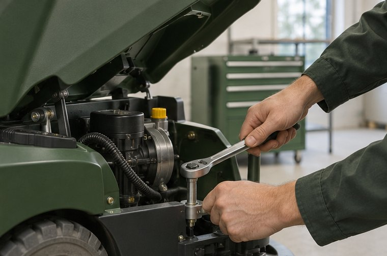

Entretien des bâtiments
Les essentiels pour nettoyer et approvisionner les espaces partagés.
- Produits de papier et distributeurs
- Produits de nettoyage et options écologiques
- Matériel de sécurité et tapis d’entrée
Entretien commercial et hygiène
Produits et matériel de nettoyage commercial, avec un service technique pour les équipes d’entretien en Colombie-Britannique.

Gamme de produits
Approvisionnez votre local d’entretien, équipez votre personnel ou aménagez une cuisine commerciale.
Les essentiels pour nettoyer et approvisionner les espaces partagés.

Des appareils pour les sols durs, les tapis et l’entretien courant.

Des fournitures pour les cuisines commerciales, les hôtels, les buanderies et les piscines.

Pièces et service
Nos techniciens certifiés réparent la plupart des marques et modèles de matériel de nettoyage commercial. Demandez une intervention sur place ou apportez votre appareil à notre atelier de Vernon.
Zones desservies
Notre siège est à Vernon. Nous desservons des entreprises dans l’Intérieur et le Lower Mainland.
Voir toutes les zones desserviesVernon, Kelowna, Penticton, Kamloops, Salmon Arm et les Kootenays
Vancouver, Burnaby, Coquitlam, Richmond, Surrey et la vallée du Fraser
Pour votre équipe
Les documents, le catalogue et les formulaires liés sont en anglais.
Oui. A&G Supply répare la plupart des marques et modèles, y compris le matériel acheté chez d’autres fournisseurs.
Connectez-vous à votre compte en ligne A&G Supply pour voir les prix. Si vous n’avez pas de compte, vous pouvez demander une soumission dans le catalogue ou faire une demande d’ouverture de compte commercial.
Le formulaire de demande de service couvre le matériel de nettoyage commercial, les lave-vaisselle et les appareils de buanderie.
Nous joindre
Que ce soit pour une première commande, le choix d’un appareil ou une réparation, notre équipe peut vous aider.
Du lundi au vendredi · 8 h à 16 h, heure du Pacifique
Obtenir l’itinéraire